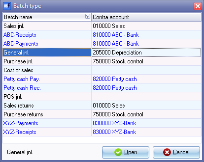
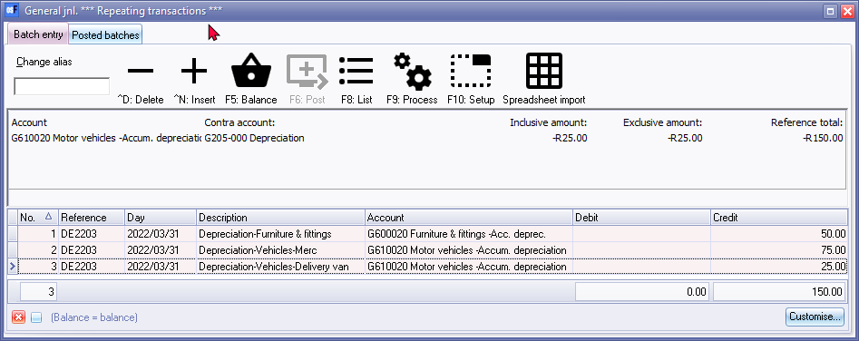
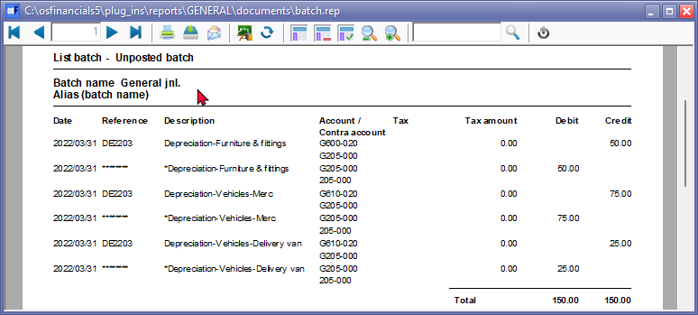

Enter / Edit - Repeating transactions
To enter Repeating transactions:
- On the Default ribbon, select Edit → Repeating transactions.

|
|
The alias (batch name) is not entered on the Repeating transactions batch. The alias (batch name) of the last Repeating transactions batch imported (F9:Process) will be displayed before the Open and Cancel buttons |

|
|
The Debit and Credit totals will not be displayed. These totals are only displayed if the Batch type selection screen is launched from the Default → Batch entry (F2) on the Default ribbon. |

- Select the General Jnl batch type and click on the Open button.
|
|
To indicate that you have selected a Repeating Batch or Journal, note the following:
|
- Click on the F10:Setup icon to set your batch up.
- Set up the Repeating transactions General journal for depreciation transactions as follows:
- Contra account - Select the contra (balancing) account (e.g. Depreciation expense account).
- Amount entry - Select Credit.
- Click on the Advanced tab.
- Select the “General ledger” option for the Account lookup type, since you do not need to select Debtor or Creditor accounts when you enter transactions for depreciation.
- Once setup; click on the OK button.
|
|
Tax Since No Tax (VAT/GST/Sales Tax) is applicable, to the depreciation transactions in this topic, we have selected to hide the Tax column in the Setup Options. |
- You are now ready to capture your first repeating entry transaction.
- Reference: DE2203
- Date: 2022/03/31
- Description: Depreciation-Furniture and Fittings.
- Account: 600/020 Furniture and Fittings - Accumulated Depreciation
- Amount: 50.00 CR
- Once finished, capture your second entry.
- Reference: DE2203
- Date: 2022/03/31
- Description: Depreciation-Motor Vehicles-Merc
- Account: 610/020 Motor Vehicles - Accumulated Depreciation
- Amount: 75.00 CR
- Once finished, capture your third transaction.
- Reference: DE2203
- Date: 2022/03/31
- Description: Depreciation-Motor Vehicles-Delivery Van
- Account: 610/020 Motor Vehicles - Accumulated Depreciation
- Amount: 25.00 CR
- The Repeating transactions for General journal screen should now reflect as follows:
|
|
A Repeating Batch differs from a normal batch as follows: Title bar - displays *** Repeating transactions *** F6:Post - Disabled since you cannot post repeating transactions. Lines - Background colour. |
- Click on the F5:Balance icon to balance the batch. osFinancials will generate a balancing entry to the selected Contra account (e.g. "Depreciation").
|
|
If the description is displayed as "BALANCING ENTRY General Jnl", and you have entered transactions with Tax, the Tax reports may not include these transactions correctly. You need to deselect (remove the tick) of the Consolidate balancing field on the Standard tab of the F10:Setup (Options for this batch screen) and rebalance the batch. |

- Click on the F8:List icon to print a list of the transactions in the batch.

|
|
It is recommended that the source documents (e.g. working papers, calculations, etc.) be attached to this List of the transactions and that it be retained for record and audit purposes. |
- Press the Esc key to exit this repeating batch.